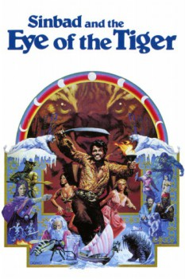

Country:United Kingdom, 113 minutes
Spoken languages:English
Genres:Adventure, Family, Fantasy
Director(s):Sam Wanamaker
Writer(s):Beverley Cross
Video Codec:Unknown
Number: 3258

Certification:G
Storyline:
Princess Farah refuses to marry Sinbad until Prince Kassim, her brother, is able to give his consent. However, the Prince's wicked stepmother, Queen Zenobia, has changed Kassim into a baboon in order to have her own son crowned as caliph. Sinbad, his crew, the Princess and the transformed Prince travel to a distant land, fighting every obstacle Zenobia places in their path, to seek the advice of a legendary wise man who can possibly tell how to end the spell.
Cast:
Patrick Wayne (as Sinbad), Jane Seymour (as Princess Farah), Taryn Power (as Dione), Margaret Whiting (as Zenobia), Patrick Troughton (as Melanthius)
Medium: Media file,
Location: D:\Sinbad\Sinbad.And.The.Eye.Of.The.Tiger.[1977].mp4
Loaned: No
Aspect ratio: Unknown